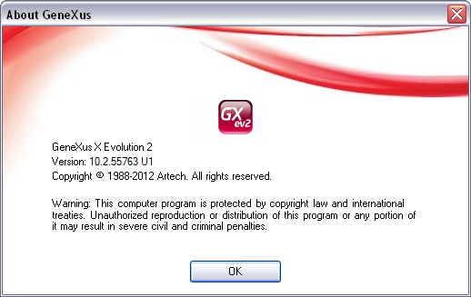

What is the exact GeneXus version you are running? This question may be asked by Artech Support, your colleagues or yourself. How can you answer this question? Help/About GeneXusStart GeneXus (if not already started) and select About GeneXus in the Help menu. A window will pop up showing all the version information you need.  Copy Version information to the clipboardIf you need to copy version information just press Ctrl-C while the above window is displayed. After that, paste it anywhere you need it. AvailabilityAvailabilityThe copy to clipboard feature is available since GeneXus X Evolution 2 Upgrade 1.
|